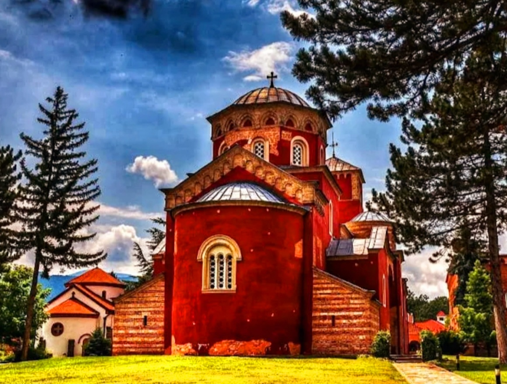

Trešnjar kod Žiče (Kraljevo) – Istorija, priroda i digitalni vodič
🪨 Od rudnika do tišine brda
Digitalna monografija – Verzija 2.0
🌄 Gde se zemlja susreće sa istorijom
Trešnjar je malo brdsko naselje u okviru sela Žiča, nadomak Kraljeva. Nalazi se na oko 290 metara nadmorske visine, u prostoru gde se šuma, livade i voćnjaci prepliću sa tragovima jedne snažne industrijske epohe.
Ovo nije selo velikih ravnica. Oranica nema mnogo.
Ali ima pogleda. Ima vazduha. Ima tišine.
I ima priču.
⛏️ Selo radnika i rudara
Trešnjar je decenijama bio selo koje se budilo rano. Muškarci su silazili ka rudnicima magnezita ili odlazili put Kraljeva — u „Magnohrom“ ili u Fabriku vagona. Mnogi su generacijama radili u tim sistemima. Industrija je bila kičma sela.
Pod zemljom su postojala dva jamska rudnika. Vagoneti su klizili šinama. Rize su se uzdizale iznad brda. Iz kamena se vadio magnezit, a iz sela su se gradile porodice.
Trešnjar je bio radničko selo — ali nikada bez zemlje, bez voćke, bez bašte. Žene su bile stub doma. Prave domaćice — čuvale su kuću, baštu, porodicu, ali i dostojanstvo vremena u kom su živele. Njihova snaga nije bila bučna, ali je bila temelj.
Danas su rudnici tihi. Ali tragovi su i dalje tu.
📍 Lokacije glavnih rudarskih ulaza
U okviru nekadašnjeg rudnika magnezita na području Trešnjara sačuvana su dva glavna rudarska ulaza (okna). Njihove tačne lokacije evidentirane su putem satelitskih snimaka i prikazane su na mapama ispod.
Napomena: Lokacije su informativnog karaktera. Prilaz i ulazak u objekte se ne preporučuje.
⛪ Blizina Žiče – sloj dublje od svakodnevice

Na svega nekoliko minuta nalazi se manastir Žiča — istorijsko središte srednjovekovne Srbije, mesto krunisanja srpskih kraljeva.
Žiča je u narodu poznata kao „Sedmovrata“, a Trešnjar je njen tihi komšija.
Ovaj spoj — duhovna vertikala Žiče i radnička horizontalna snaga Trešnjara — daje prostoru posebnu težinu.
Ovde se istorija ne uči iz knjiga. Ona je u vazduhu.
Za detaljan digitalni vodič kroz manastir Žiča posetite zvanični sajt Manastira Žiča.
🏅 Živan Maričić – ime koje ostaje
Trešnjar je rodno mesto Živana Maričića (1911–1943), narodnog heroja.
Pored njegove rodne kuće 1951. godine podignuta je spomen-ploča. Kuća više ne postoji, ali ploča stoji.
Osnovna škola u Žiči danas nosi njegovo ime — kao trajno podsećanje da jedno malo mesto može dati veliko ime.
Njegova priča je deo istorije, ali i deo identiteta ovog mesta.

🧭 Identitet
Trešnjar nije samo geografska tačka.
On je spoj tri sloja:
- Rudarsko-industrijski
- Istorijsko-duhovni (Žiča)
- Savremeno ruralni
U tom spoju leži njegova vrednost.
📜 Zaključak
Trešnjar je mesto koje je prošlo kroz industrijsku snagu, istorijsku blizinu i današnju tišinu.
✍️ Autorska beleška
Ova monografija nastala je iz lične potrebe da se sačuva priča o mestu koje je oblikovalo generacije.
Trešnjar nije veliko selo, ali ima slojeve — rudarski, radnički, istorijski i duhovni.
Mnogi su iz njega odlazili na posao u fabrike, mnogi su se vraćali pod ova brda. Tragovi tog vremena i danas su vidljivi.
Ovaj tekst nije samo pregled podataka. On je pokušaj da se povežu prošlost i budućnost jednog malog mesta.
Ako selo ima priču — ima i budućnost.
Autor: Zoran Tatomirović